Peak Pursuits
A Canadian adventure tour concept helping people “reach their peak” through nature-first, small-group trips. I built the brand, social content system, and a mobile booking experience.
01Project Info
- Role
- Branding, UX/UI Designer, Researcher
- Context
- Solo academic project in Branding & Marketing, designing a new Canadian adventure tour company from research through to app prototype.
- Tools
- Adobe Illustrator, Adobe Photoshop, Figma, FigJam
- Timeframe
- 2024 • 4-week studio project
02Project Background
Adventure tourism is one of the fastest-growing sectors in travel, with demand rising for small-group trips that blend physical challenge, nature immersion, and cultural experiences. My brief was to create a brand for a new Canadian tour company targeting adults 18–45 who want to get outdoors but need help matching their experience level to the right trip.
The company needed a clear identity, a sense of trust and safety, and a digital experience where users could explore itineraries, understand difficulty levels, and add on extras. My goal was to build a nature-first brand system and app concept that made “reaching your peak” feel exciting, inclusive, and achievable for different types of travelers.
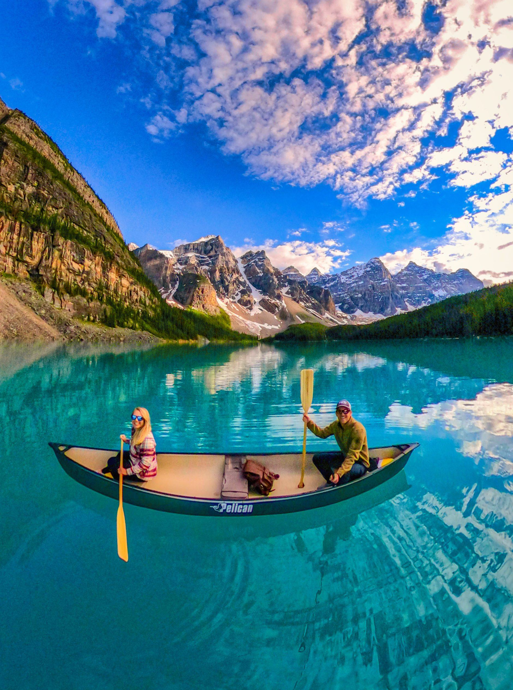
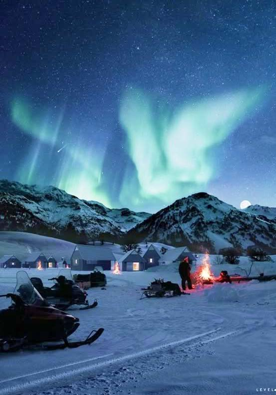
03Research & Direction
- From competitor analysis (EF Tours, Anderson Vacations, G Adventures), high-quality photography, clear typography, and simple navigation are table stakes for trust in the adventure-tour space.
- Most brands focus heavily on destination and adrenaline, but less on personalization: matching experience level, comfort with risk, and desired social vibe.
- Personas surfaced three core segments: a sustainability-minded solo traveler, a family looking for safe but memorable trips, and a luxury retiree who values comfort, guidance, and cultural depth.
- All three personas wanted adventure with ease: clear itineraries, transparent pricing, and reassurance around safety and environmental impact.
- Anchor the brand around the idea of “Reaching Your Peak” - a metaphor for both physical summits and personal growth, flexible enough to serve beginners and experienced adventurers.
- Define experience pillars as: Accessible Adventure (clear levels and guidance), Nature-First (eco-conscious framing), and Connection (small groups and shared memories).
- Use bold, seasonal imagery and a grounded color palette (deep greens/blues, warm sunsets) to differentiate from generic “stock outdoor” aesthetics.
- Design the app around filtering by skill level, trip style, and season, so each persona can quickly find tours that feel tailored to them.
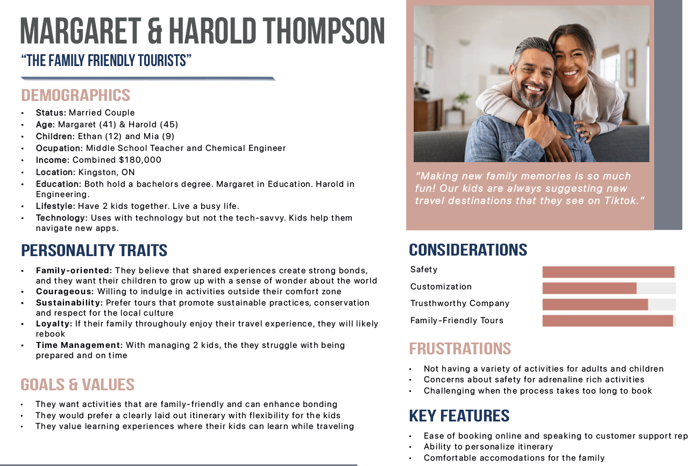
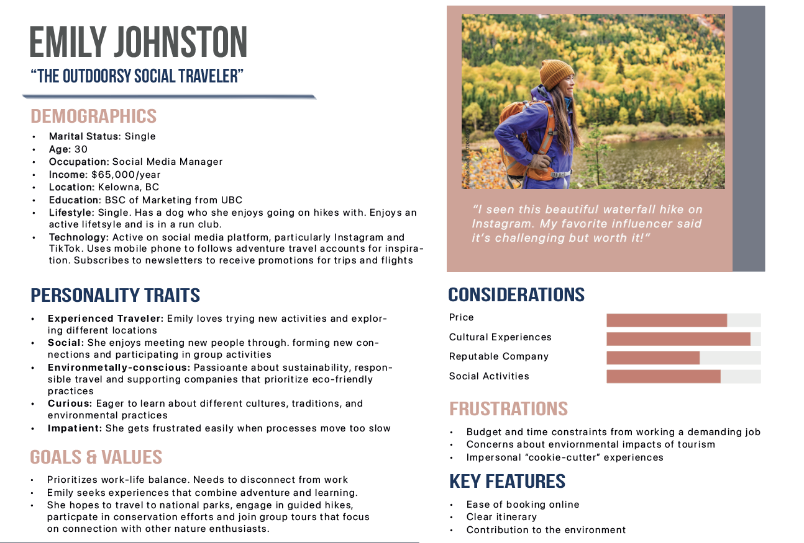
04Naming & Concept
Through mind-mapping keywords like adventure, inclusivity, memories, and transparency, I explored multiple routes before landing on Peak Pursuits. The name pairs motion (“pursuits”) with achievement (“peak”), clearly expressing the brand's promise: helping people reach their personal summit.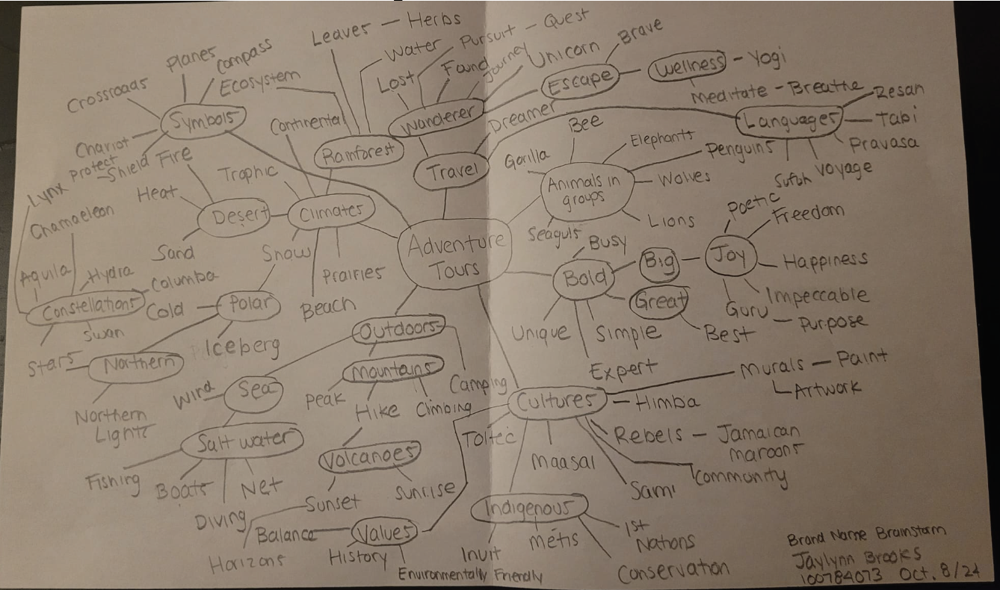
05Visual System
I developed seasonal moodboards (winter, fall, spring, summer) to capture different outdoor energies, then unified them into a “Reach Your Peak” system: deep forest greens and lake blues with warm orange and yellow accents, supported by clean, legible typography optimized for both print and mobile.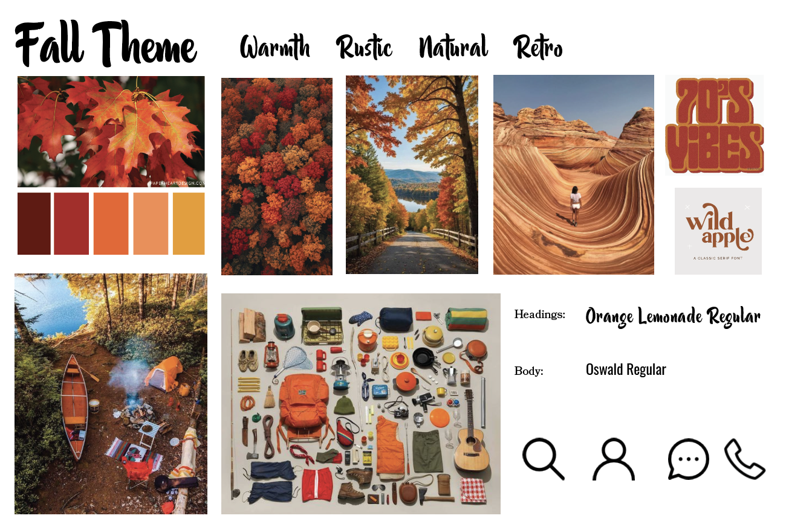
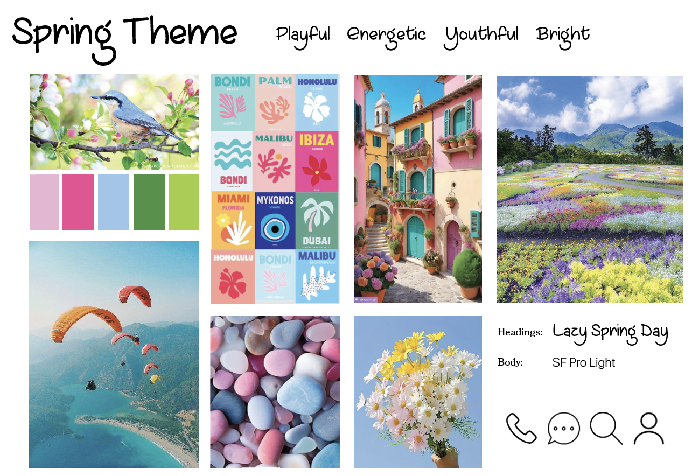
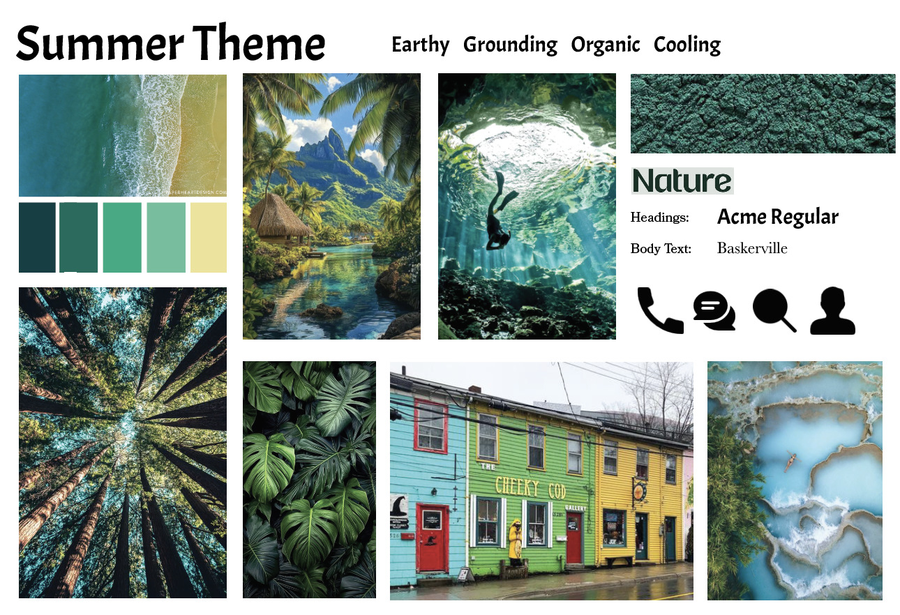
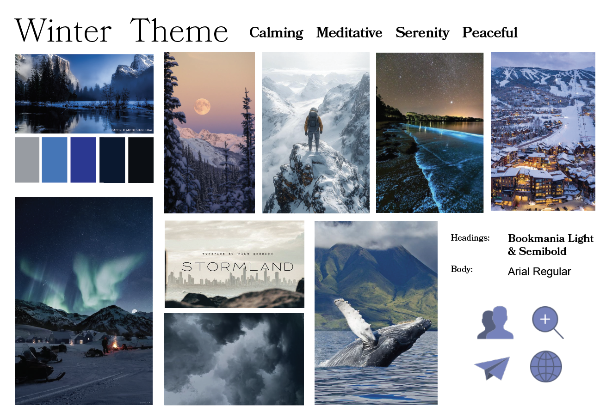
06Logo & Iconography
Logo sketches combined mountains, compass shapes, and directional arrows. The final mark uses a mountain silhouette framed by a subtle upward path, visually reinforcing progress and direction while remaining simple enough to scale across app icons, badges, and merchandise.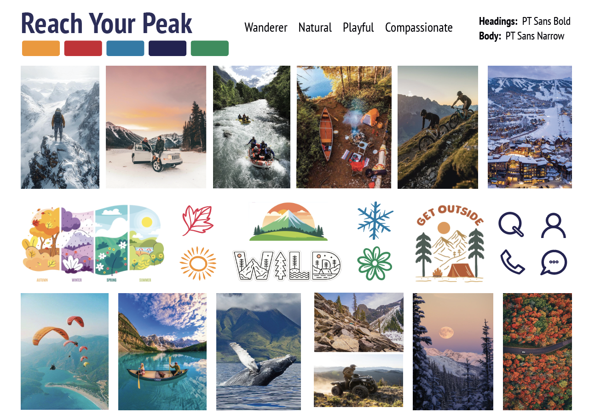
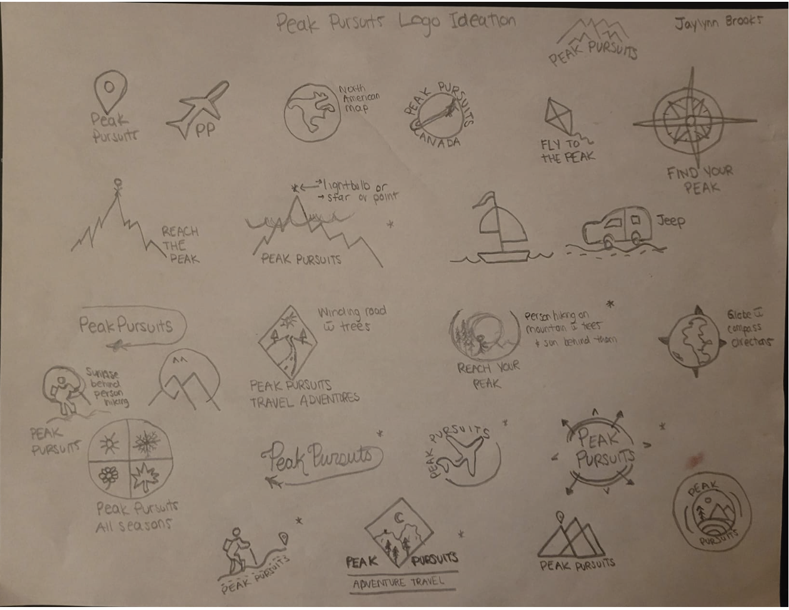
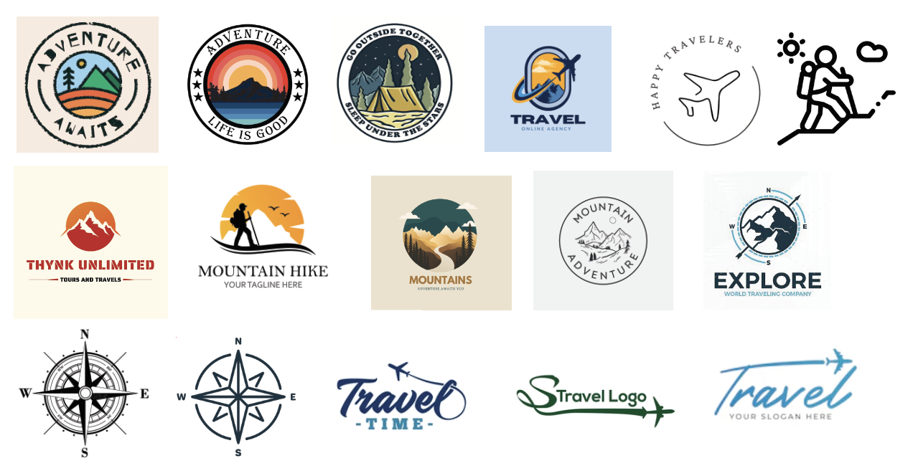
07Social Content System
I created an Instagram grid concept with four core post types: lifestyle stories of guests “reaching their peak,” product posts for new tours, promotional offers (like BOGO with a friend), and topical prep content (packing lists, seasonal tips). This mix balances inspiration, information, and conversion.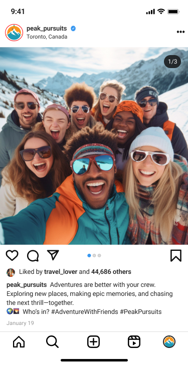
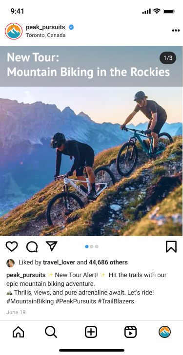
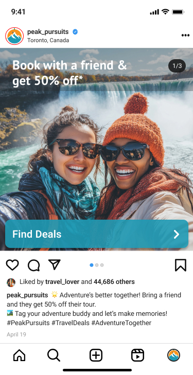
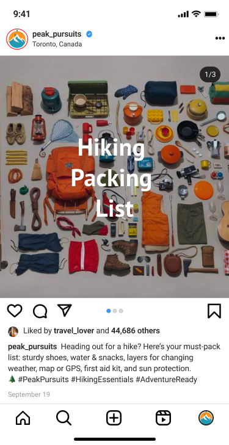
08App Experience
The prototype flows from entry point to login/signup, explore tours, tour details, booking, and about pages. Each tour card highlights difficulty level, duration, and key features at a glance, while detail pages offer clear itineraries, optional add-ons, and concise safety notes to reduce cognitive load and decision fatigue.09Results & Metrics
- I was responsible for the full end-to-end process: market research, persona creation, moodboards, naming, logo system, social content strategy, and mobile app wireframes and UI.
- I translated a dense research deck into a concise, visual storytelling flow that could be presented to stakeholders as if it were a real client pitch: from opportunity framing to brand platform to product experience.
- The project strengthened my ability to bridge branding and product design. In critiques, the work was highlighted for its clear link between personas, brand story, and the final app interface, and I now use it as a core case study for adventure/travel-adjacent roles.
- Internally, the system is structured so it could be extended: new tours can plug into the same visual templates, and the booking flow is modular enough to adapt for web or native.
06Next Steps
While this was an academic project, Peak Pursuits now serves as a reusable blueprint for future collaborations with real adventure brands or eco-tourism operators. The brand platform, content system, and app architecture could be adapted to a live client with real data, partner logos, and booking APIs, turning this case study into a launch-ready product.